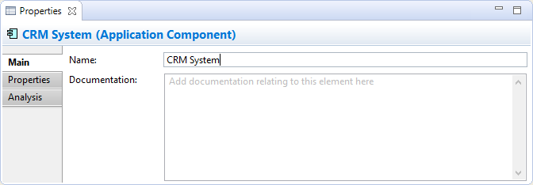
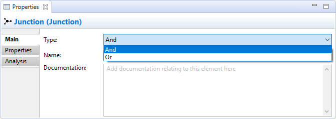
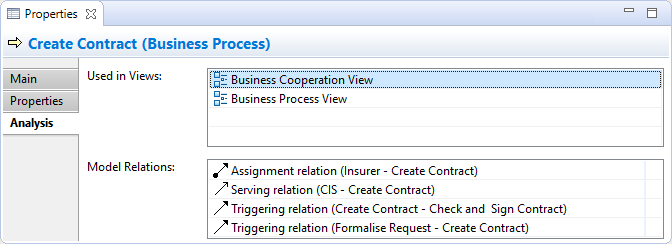

Propriétés d'élément
Sélectionner un élément de modèle d'élément dans l'arborescence des modèles ou dans une vue signifie que vous pouvez modifier ou consulter les propriétés suivantes dans la fenêtre des propriétés.
L'onglet principal

Modifier les propriétés "principales" pour un élément ArchiMate
| Nom: |
Le nom d'un élément ArchiMate |
| Documentation: |
Un endroit où saisir de la documentation utilisateur concernant l'élément ArchiMate |
 Dans le champ texte "Documentation", les URLs qui commencent par "http://" "https://" ou "ftp://" sera affichées sous forme d'hyperlien. En cliquant sur la touche Ctrl / Commande, le curseur se transforme en une "main" et vous pouvez ouvrir le lien dans un navigateur.
Dans le champ texte "Documentation", les URLs qui commencent par "http://" "https://" ou "ftp://" sera affichées sous forme d'hyperlien. En cliquant sur la touche Ctrl / Commande, le curseur se transforme en une "main" et vous pouvez ouvrir le lien dans un navigateur.
Le connecteur jonction possède une propriété additionnelle pour le type:

La propriété de type de la jonction
| Type: |
Peut être définie à "Et" ou "Ou". Modifier ceci change également l'icone de l'élément. |
L'onglet propriétés
Pour plus d'information concernant la création et la gestion des propriétés utilisateur, voir propriétés utilisateur.
L'onglet Analyse

Voir l'"Analyse" pour un élément ArchiMate
| Utilisé dans les vues: |
Un tableau montrant les vues (s'il y en a) dans lesquelles l'élément sélectionné est utilisé (affiché dans un diagramme). Double-cliquez sur une entrée de la table ouvrira la vue et sélectionnera l'élément dans le diagramme correspondant. |
| Relations du modèle: |
Un tableau montrant les relations (s'il u en a) provenant et partant de l'élément sélectionné dans le modèle. Double-cliquer sur une entrée de la table va sélectionner l'élément dans la fenêtre de l'arborescence des modèles si elle est ouverte. |